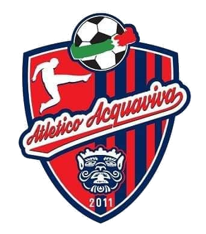

Il mio sport preferito è il calcio, lo pratico da quando ho 5 anni, il ruolo in cui ho sempre giocato è stato a centrocampo tranne durante la stagione 2019/2020 dove ho giocato terzino sinistro per provare.
Le squadre in cui ho giocato sono queste:
Gioco tutt'ora nel Atletico Acquaviva dove nell'Under 17. Abbiamo concluso la prima parte del campionato al secondo posto e abbiamo iniziato la seconda parte del campionato dove abbiamo vinto la prima partita contro il Gioia.
